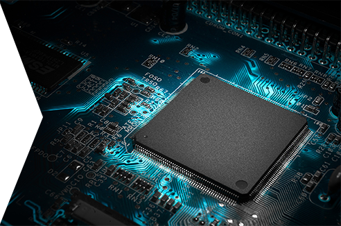
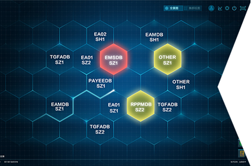
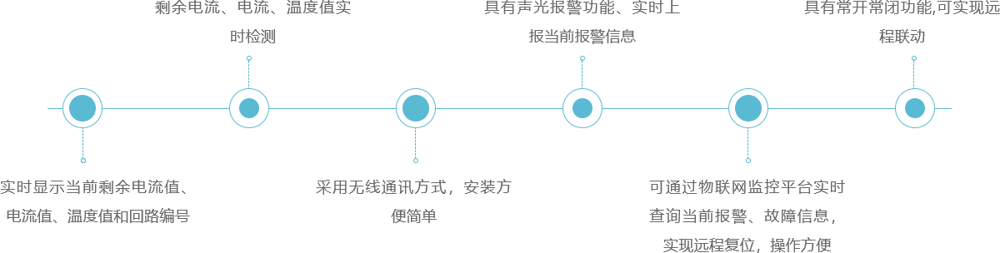
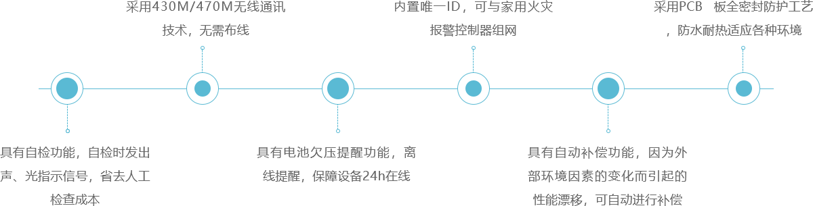

无磁水表具有功耗低（静态电流小于5μA）、测量流量范围宽、精度高、稳定性和一致性好的特点，尤其在小流量下亦保持了很高的测量精度，同时丝毫不受各类水锈、杂质的影响，特别适合在水质较差的供热环境下长期使用而不影响测量精度。
技术特点 / TECHNICAL CHARACTERISTICS
-
采集技术
无磁传感数据采集，采集精度1L -
报警功能
电池欠压，计量异常、预购量和预付费使用达到阈值等告警提示 -
预付费
可支持预付费和预购量 -
远程功能
可实现水表远程运行状况自检、远程监测、远程控制阀门等 -
数据传输
可定时发送/接收数据，发送/接收周期灵活设置（日周月模式） -
自动纠错
多重数据备份，智能分析纠错，确保数据准确无误 -
智能平台
实时计量阶梯水价、NB-IoT多模通讯技术、大容量信息两地储存 -
计量度
采用无线数码侦听技术，线性误差好，计量精度高 -
防磁干扰
可有效抗击强磁、强电及雷电干扰 -
耐磨长久
去除最易磨损、繁杂的齿轮计数部件 -
可靠安全
采用机电隔离设计，支持带电无限次实时抄表 -
超长寿命
采用低功耗模式，电池使用寿命长达6-10年 -
防冰冻
整表采用自主研制的专利技术，可增加-8℃内防冰冻功能 -
维护方便
机电可拆设计，支持现场更换部件和电池 -
全密封技术
采用独有的全密封技术，达到IP68防水等级
技术参数 / TECHNICAL PARAMETERS
- 计量等级 2级
- 温度等级 T30（冷水表） T90（热水表）
- 工作电压 3.6V
- 工作压力 ≤1.0MPa
- 结构形式 一体式
- 安装方式 水平安装
- 防护等级 IP68
- 压力损失等级 △P63
- 环境相对湿度 ≤95%
- 信息采集方式 无磁采集
- 绝缘耐压强度 5000V
脉冲式防冻水表具有功耗低（静态电流小于5μA）、测量流量范围宽、精度高、稳定性和一致性好的特点，尤其在小流量下亦保持了很高的测量精度，同时丝毫不受各类水锈、杂质的影响，特别适合在水质较差的供热环境下长期使用而不影响测量精度。具备良好抵抗北方寒冬冰冻环境功能。
技术特点 / TECHNICAL CHARACTERISTICS
-
专网专号
采用NB-IoT/WIFI多模无线通信方式，无缝切换；通信安全、可靠 -
阶梯水价
远程预付费，可设置阶梯水价 -
无线通信
定时自动上传数据，可实现掉线重连和数据补传 -
实时显示
累计用水量、设备状态等信息 -
唤醒功能
水表平时处于低功耗模式，可采用拨动开关快速唤醒 -
自动纠错
查看所有在线设备数据；通过手机APP或服务器端控制水表阀门 -
报警保护
出现漏水和电池电量较低时，会自动报警，记录信息 -
防冰冻
整表采用自主研制的专利技术，可增加-8℃内防冰冻功能 -
超长待机
内置锂亚硫酰氯柱式功率型电池，设备可持续工作6年 -
全密封技术
采用独有的全密封技术，达到IP68防水等级
技术参数 / TECHNICAL PARAMETERS
- 计量等级 2级
- 温度等级 T30（冷水表） T90（热水表）
- 工作电压 3.6V
- 工作压力 ≤1.0MPa
- 结构形式 一体式
- 安装方式 水平安装
- 防护等级 IP68
- 压力损失等级 △P63
- 环境相对湿度 ≤95%
- 机电转换误差 ≤1m³（最小显示分度）
- 绝缘耐压强度 5000V
直读式水表具有功耗低（静态电流小于5μA）、测量流量范围宽、精度高、稳定性和一致性好的特点，尤其在小流量下亦保持了很高的测量精度，同时丝毫不受各类水锈、杂质的影响，特别适合在水质较差的供热环境下长期使用而不影响测量精度。
技术特点 / TECHNICAL CHARACTERISTICS
-
专网专号
采用NB-IoT/WIFI多模无线通信方式，无缝切换；通信安全、可靠 -
阶梯水价
远程预付费，可设置阶梯水价 -
无线通信
定时自动上传数据，可实现掉线重连和数据补传 -
实时显示
累计用水量、设备状态等信息 -
唤醒功能
水表平时处于低功耗模式，可采用拨动开关快速唤醒 -
自动纠错
查看所有在线设备数据；通过手机APP或服务器端控制水表阀门 -
数据中心
多重数据库备份，智能分析纠错，确保数据准确无误 -
功能设置
多重数据库备份，智能分析纠错，确保数据准确无误 -
超长待机
内置锂亚硫酰氯柱式功率型电池，设备可持续工作6年 -
全密封技术
采用独有的全密封技术，达到IP68防水等级
技术参数 / TECHNICAL PARAMETERS
- 计量等级 2级
- 温度等级 T30（冷水表）
- 工作电压 3.6V
- 工作压力 ≤1.0MPa
- 结构形式 一体式
- 安装方式 水平安装
- 防护等级 IP68
- 压力损失等级 △P63
- 环境相对湿度 ≤95%
- 屏幕直读位数 4位直读
- 绝缘耐压强度 5000V
蓝牙智能水表是一款应用高科技蓝牙BLE4.0技术研发的符合《GB/T778.1、2、3-2007》标准的家用冷水水表。采集部分使用OKI干簧管脉冲方式，电子部分使用先进的BLE-SOC芯片技术，从而实现了流量计量和无线传输的完美结合。
核心优势 / CORE ADVANTAGES

硬件优势
采用国际成熟的蓝牙技术，研发团队不断测试改进成熟后推入市场。结合了卡式水表的预付费功能和远传水表的数据传输功能，无需布线，基站、中继器等设备，信号稳定，不怕井盖屏蔽。实现浸泡级防水，适应大部分用水环境。

软件优势
颠覆了传统的管理模式，没有分散售水点，每个用户就是我们的抄表员！不用卡片，用户直接通过手机，就可以进行抄表、充值、操作。预付费模式，无需抄表人员，打开蓝牙即可无线上传数据。手机一键浏览用水统计。技术特点 / TECHNICAL CHARACTERISTICS
-
手机购水
微信支付
-
阶梯水价
轻松实现
-
无论信号强弱
10米内自动连接
-

手机抄表
自动传送
-
安装简便
无需布线
技术参数 / TECHNICAL PARAMETERS
- 计量等级 2级
- 温度等级 T30（冷水表）
- 工作电压 3.6V
- 工作压力 ≤1.0MPa
- 结构形式 一体式
- 安装方式 水平安装
- 防护等级 IP68
- 压力损失等级 △P63
- 环境相对湿度 ≤95%
- 手机蓝牙版本 ≥BLE4.0
- 绝缘耐压强度 5000V
电气火灾监控探测器是集漏电、过载、温度过高、烟雾检测等电气故障于一体的组合式智慧用电监控探测器，通过内置GSM模块以无线通讯的方式实现电气火灾物联网平台的远程监控，实时接收并显示报警、故障等状态信息。
产品功能 / PRODUCT FEATURES
应用场所 / APPLICATION PLACE
技术参数 / TECHNICAL PARAMETERS
- 环境条件 -10℃ ~ 40℃
- 相对湿度 ≤90% 不凝露
- 报警电流 约20mA
- 工作方式 AC220V / 2A
- 剩余电流报警设定值 100mA ~ 1000mA
- 电流报警设定值 10A ~ 630A
- 温度报警设定值 55℃ ~ 140℃
- 正常待机电流 约85mA
- 通讯方式 GRPS(2G)无线通讯、支持移动SIM卡、联通SIM卡
- 控制输出 检测回路值超过预设报警值，常开触点闭合，从而达到脱扣效果。
- 执行标准 GB14287.2 - 2014《电气火灾监控系统 第2部分：剩余电流式智慧用电监控探测器》 GB14287.3 - 2014《电气火灾监控系统 第3部分：测温式智慧用电监控探测器》
NB-IoT烟感探测器，本产品能够探测火灾发生初期产生的烟雾并及时发出声报警信号。内置集成无线组件，稳定可靠，可与家用火灾报警控制器组网，移动端、PC端实时远程接收设备数据与报警信息。本产品适用于家庭、宾馆、公寓等场所。
产品功能 / PRODUCT FEATURES
应用场所 / APPLICATION PLACE
技术参数 / TECHNICAL PARAMETERS
- 工作电压 DC3V （2 节 1.5V FR14505/AA 电池）
- 工作电流 监视电流：< 20uA 报警电流：< 30mA
- 通讯方式 无线通讯
- 发射功率 <20dBm
- 通讯距离 ≤50m
- 发送频段 433MHz
- 报警声压 声音由小到大，稳定后正前方 3 米处 45dB～75dB（A 计权）
- 使用环境 温度-10℃～+55℃ ，相对湿度≤95%RH，不凝露
- 外形尺寸 直径：100.3mm 高：48.0mm(含底座)
- 执行标准 GB 22370-2008 家用火灾安全系统
状态指示
- 正常监视状态：绿灯每 75s 闪烁一次，蜂鸣器不发声
- 故障状态：黄灯每 50s 闪烁一次，蜂鸣器短暂发声
- 报警状态：红灯常亮，蜂鸣器发出报警声